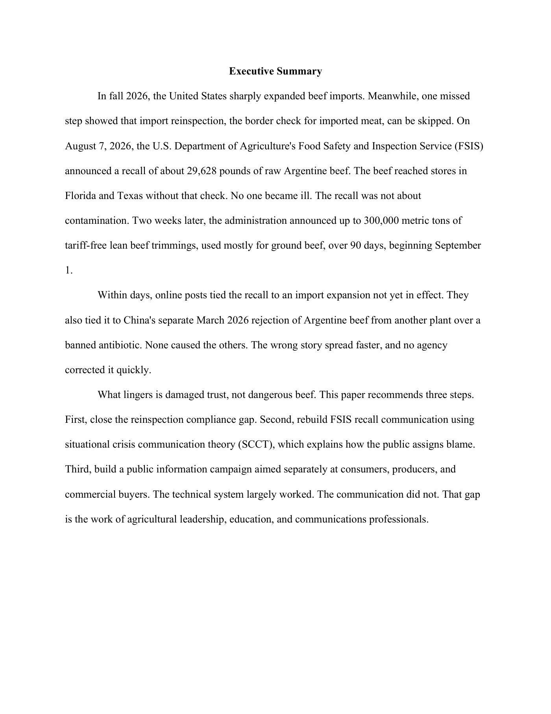

Beef import expansion: food safety oversight and public trust
In August 2026, the USDA's Food Safety and Inspection Service recalled about 29,628 pounds of Argentine beef that had reached stores in Florida and Texas without import reinspection. No one got sick and the beef was not contaminated. Two weeks later the administration announced up to 300,000 metric tons of tariff-free lean beef imports. Within days, online posts tied the recall to the import expansion and to China's unrelated rejection of Argentine beef over a banned antibiotic. None of the three caused the others, and no agency corrected the story quickly.
My analysis separates what happened from what people believed happened, then uses situational crisis communication theory (Coombs), image repair theory (Benoit), and risk-perception research (Slovic) to explain why a missed paperwork step and a banned antibiotic landed so differently with the public. It closes with three recommendations: close the reinspection compliance gap, rebuild FSIS recall communication around SCCT, and run a public information campaign aimed separately at consumers, producers, and commercial buyers.
- My role
- Sole author. I built the timeline from USDA notices, presidential proclamations, trade press, and news coverage, then assessed each source type's strengths and blind spots before drawing conclusions.
- Skills demonstrated
- Research across government, academic, trade, and news sources; critical evaluation of an evidence base that peer-reviewed work had not yet caught up with; applying communication theory to a live case; and executive-summary writing that a busy reader can act on.
- Research
- Evidence evaluation
- Crisis communication theory
- Executive writing
- APA